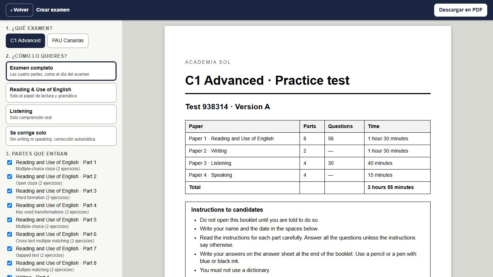
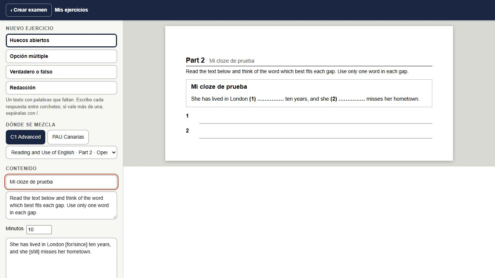
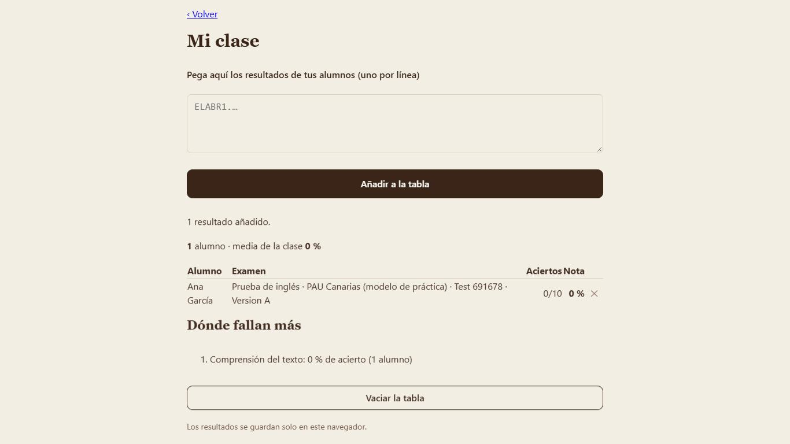
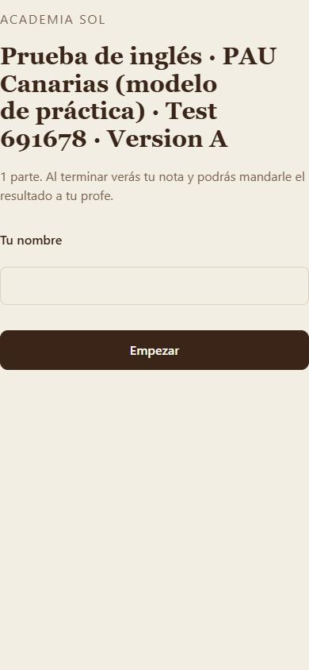

Para profes y academias que preparan C1 Advanced y la PAU de Canarias. Eliges las partes, la app monta el examen, y sale un PDF con tu nombre y tu logo.
Probar la demo gratisVer precioExamen completo, solo Reading, solo Listening o solo lo que se corrige solo. Cada mezcla es distinta y no repite ejercicios que ya hizo tu grupo.
A4, cabecera con tu academia, «Page 2 of 24», hoja de respuestas y clave del profe con explicaciones. Versiones A y B para que no se copien.
Escribe los tuyos (huecos, opción múltiple, verdadero/falso, redacción) o pásalos desde un texto, y entran en el generador junto a los del banco.
Con tu propia clave de Anthropic, la app escribe ejercicios inéditos siguiendo el formato y el nivel de cada parte, y los comprueba antes de enseñártelos.
Mandas un enlace o un QR, tus alumnos lo hacen en el móvil y te devuelven un código. Pegas los códigos y ves la nota de cada uno y dónde falla la clase.
Todo se guarda en tu navegador. No hay cuentas, ni nube, ni servidor que guarde los nombres de tus alumnos.




pago único por academia, o 29 €/año
No. Son ejercicios originales escritos para practicar con el mismo formato, la misma duración y un nivel parecido. No tenemos relación con Cambridge University Press & Assessment ni con el Gobierno de Canarias.
No. Se abre en el navegador. Tu academia, tus exámenes guardados y tus ejercicios se quedan en tu navegador; puedes sacar una copia de seguridad en un archivo.
El resultado de un alumno viaja en un código que él te manda (nombre y aciertos por parte). No pasa por ningún servidor nuestro.
La app usa tu propia clave de Anthropic: pagas a Anthropic lo que gastes (unos céntimos por ejercicio). Nosotros no cobramos nada por eso.
Descarga la copia de seguridad, ábrela en el otro ordenador y vuelve a pegar tu clave de licencia.
Exámenes completos de C1 Advanced (Reading and Use of English, Writing, Listening y Speaking) y de la PAU de Canarias, más los ejercicios nuevos que se vayan sumando.
For teachers and academies preparing C1 Advanced-style and Canary Islands university entrance (PAU) exams. Pick the parts, the app builds the exam, and you get a PDF with your name and logo.
Try the free demoSee pricingFull exam, Reading only, Listening only or just the auto-marked parts. Every mix is different and avoids exercises your group has already done.
A4, header with your academy, “Page 2 of 24”, answer sheet and a teacher’s key with explanations. Versions A and B to stop copying.
Write your own (gap fills, multiple choice, true/false, writing) or paste them from a text, and they join the generator alongside the bank.
With your own Anthropic key, the app writes original exercises following each part’s format and level, and checks them before showing you.
Send a link or QR, students do it on their phones and send back a code. Paste the codes and see each score and where the class struggles.
Everything lives in your browser. No accounts, no cloud, no server holding your students’ names.
one-off per academy, or €29/year
No. They are original exercises written to practise with the same format, timing and a similar level. We have no connection with Cambridge University Press & Assessment or the Government of the Canary Islands.
No. It opens in the browser. Your academy details, saved exams and exercises stay in your browser; you can export a backup file.
A student’s result travels as a code they send you (name and correct answers per part). It never goes through any server of ours.
The app uses your own Anthropic key: you pay Anthropic only what you use (a few cents per exercise). We charge nothing for that.